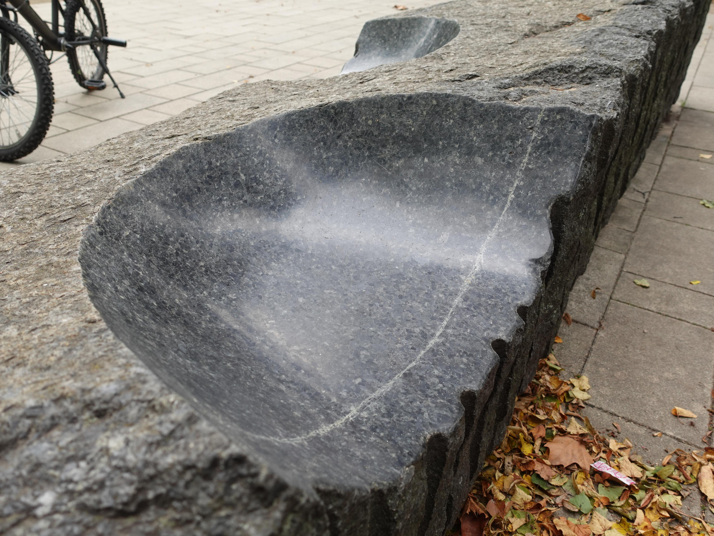
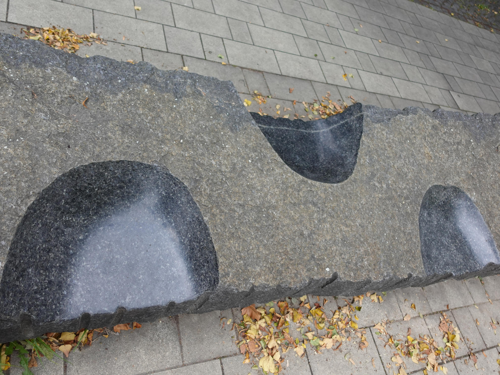
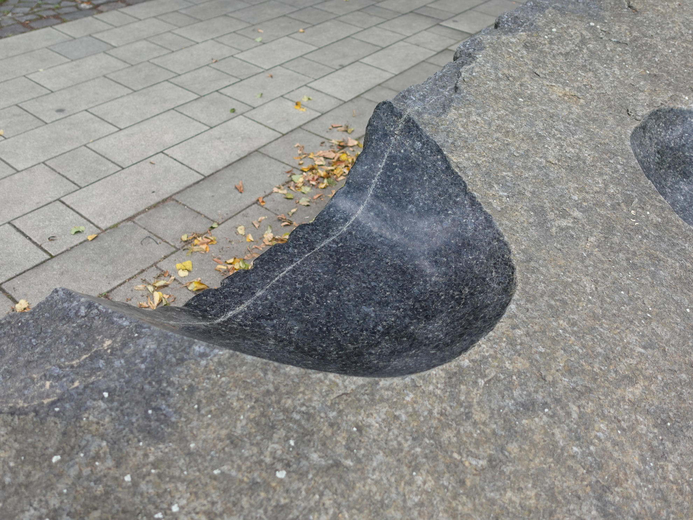
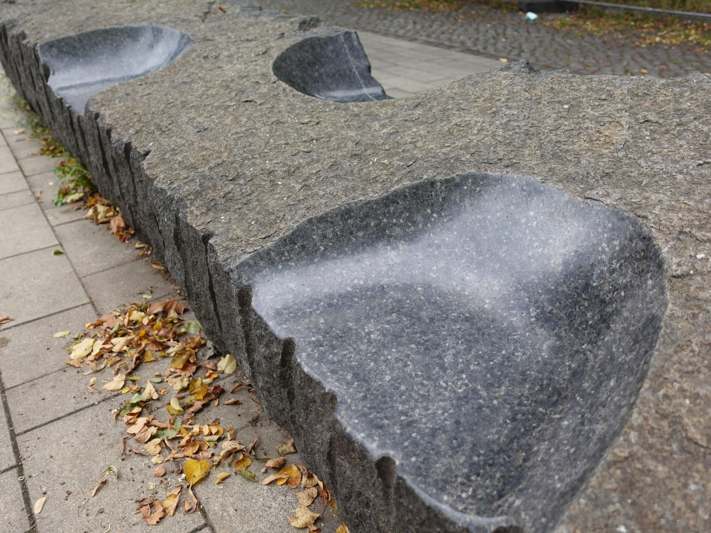
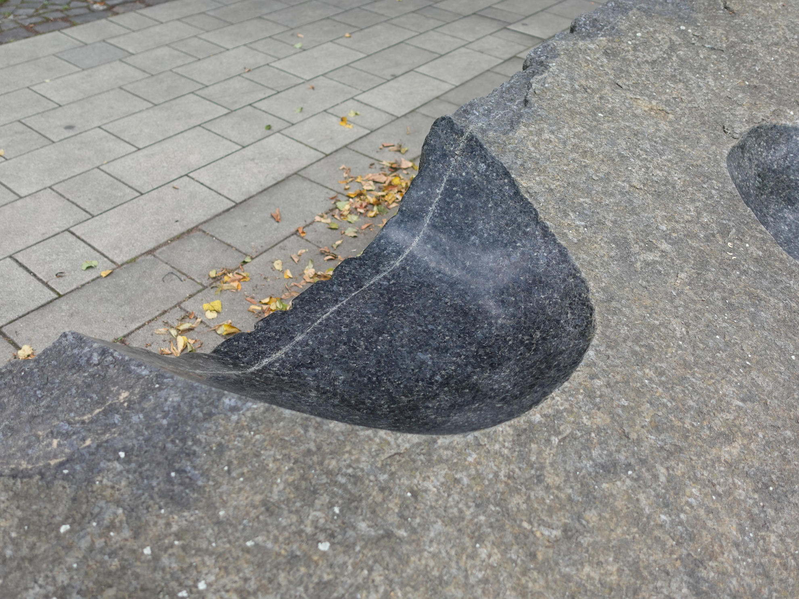
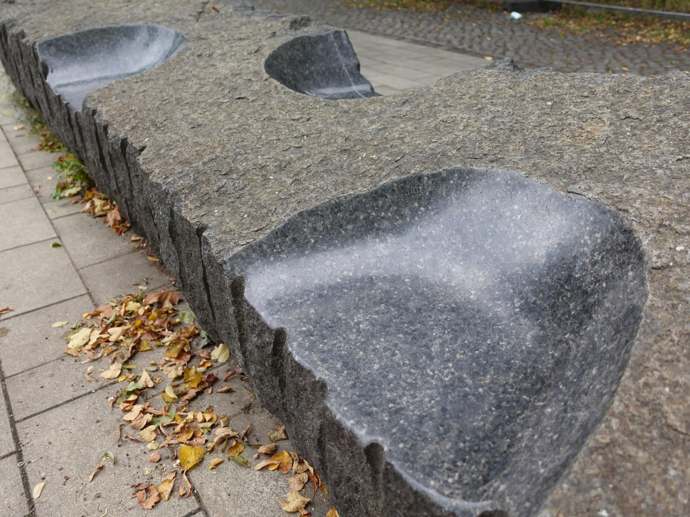

Seating Bowls
Images | Location
Big rock with bowls carved out of it. Actually some "artsy" bench, but these halfbowls make a nice fingerbording spot. Three different half-bowls with different heights and transitions are on offer.
Since this spot is supposed to be something to sit down on, you have to kneel to ride this spot
A basketball court and a playground is also nearby. Therefore this spot can get crowded with kids and families towards the afternoon.
The spot is close to the Tram and S-Bahn station Nordbahnhof, which can be reached via S-Bahn or Tram (M10 / M12)
Here's how it looks:


 
 